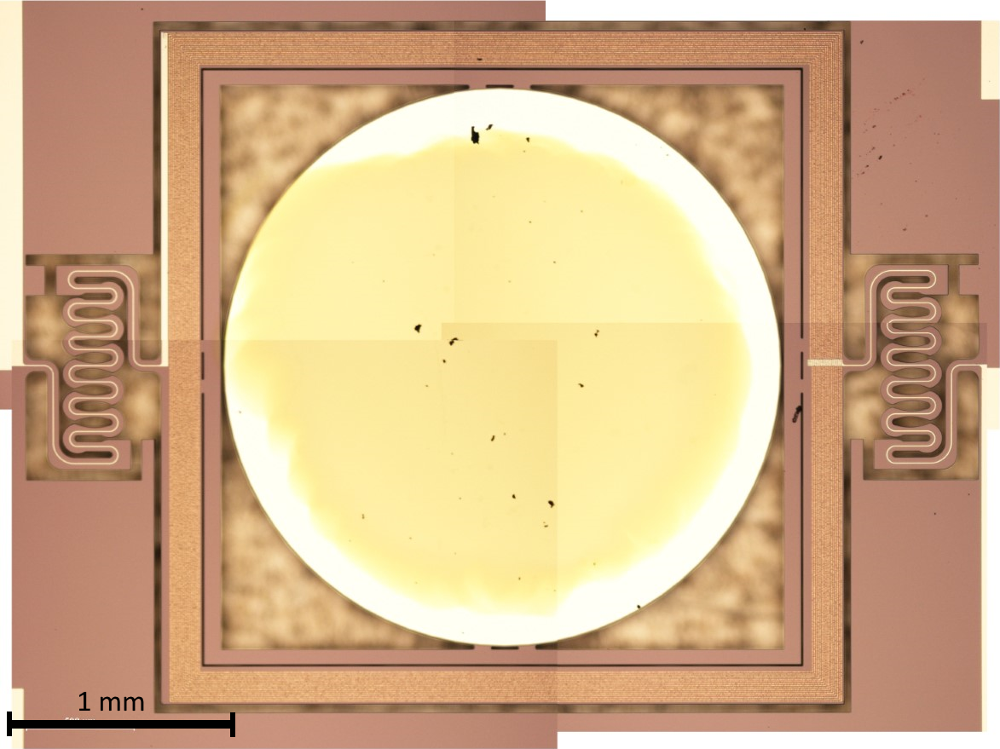

Miniaturised Infrared Radiometer

This project was my third year individual project (commonly referred to as "IP"). It provided me with an exciting and challenging opportunity to learn about the design of spacecraft scientific instrumentation, the potential of miniaturising existing components with the use of MEMS, and the challenges present when operating them in extreme environments. It concentrated on the light switch, developing a working prototype suitable to be used in follow up student projects that further develop the instrument.
This project involved the design of a scientific instrument: a miniaturized infrared (IR) radiometer designed to measure net thermal radiative flux inside Venus' atmosphere. The change of net IR flux with altitude is equal to the IR cooling or heating at that altitude. This is directly related to atmospheric energy budgets and atmospheric energy transport. This in turn is the driving force behind Venus' atmospheric processes. To measure this, the instrument must record the thermal radiative fluxes in both the upwards and downwards direction.
This instrument has a minimal number of components: a thermopile sensor, a calibration source, and a MEMS light switch. The MEMS device can either reflect external atmospheric light into the sensor, or steer radiation from the calibration target into the sensor. Providing in-situ reference readings to calibrate the mirror while it descends through the atmosphere, correcting any measurement drifts.
The main subject of this project, the light switch or MEMS micromirror, was selected based on its capabilities to achieve a great optical deflection angle (+10º) and the driving mechanism behind the tilt. At the time of writing this, electromagnetic, piezoelectric and electrostatic MEMS micromirrors are the only available types on the commercial market. An electromagnetically actuated mirror was selected due to its excellent linearity between deflection angle and coil current: the Hamamatsu Photonics S12237-03P.
The mechanical deflection angle of the mirror is linearly proportional to the current that flows through the coil. It was therefore necessary to create a controller that was able to supply the required range of current values to reliably tilt the mirror in both directions. The micromirror driver circuit that I designed and built for this purpose is composed of eight separate components:

-MEMS Mirror: Has a linear coil current / deflection relationship
-XTR111: Constant current source IC to drive the micromirror. Follows a linear input voltage / output current relationship.
-DRV8838: H-Bridge IC to switch the direction of the micromirror's titl angle.
-MCP4725: Digital to analog converter. Allows the microcontroller (digital output) to drive the XTR111 (analog input).
-Arduino UNO: Issues the commands to tilt the mirror to a given deflection angle and direction.
-9V Power Supply: Powers the microcontroller as well as the XTR111, which in turn power the rest of the circuit.
-INA219 (2): Current meters to monitor the status of the circuit.
I designed, manufactured and assembled an individual PCB for each of the individual integrated circuits, while the rest of the components were breadborded:

With this circuit, the micromirror could be precisely steered into whatever angle was required. I even programmed into it a sinusoidal motion function.
In order to be suitable for the instrument, the mirror needed to be reflective in the spectral region of interest for the instrument, which happens to span between the near and far infrared. To do this, the mirror had to be coated with a suitable metal. A 100nm thick layer of pure gold was applied on it using physical vapour depositon (PVD). This proved to be a very tricky process since the mirror, which was extremelly fragile, had to be masked very precisely to avoid depositing gold (a very conductive metal) on top of the coil tracks. The microscope image below, taken after completing the PVD process, shows the result of the operation:
